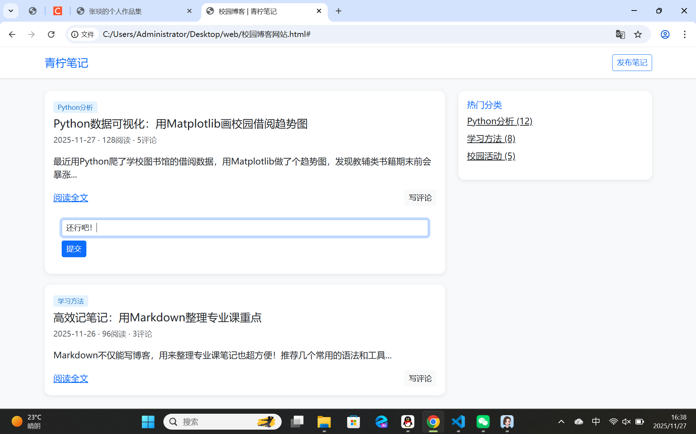
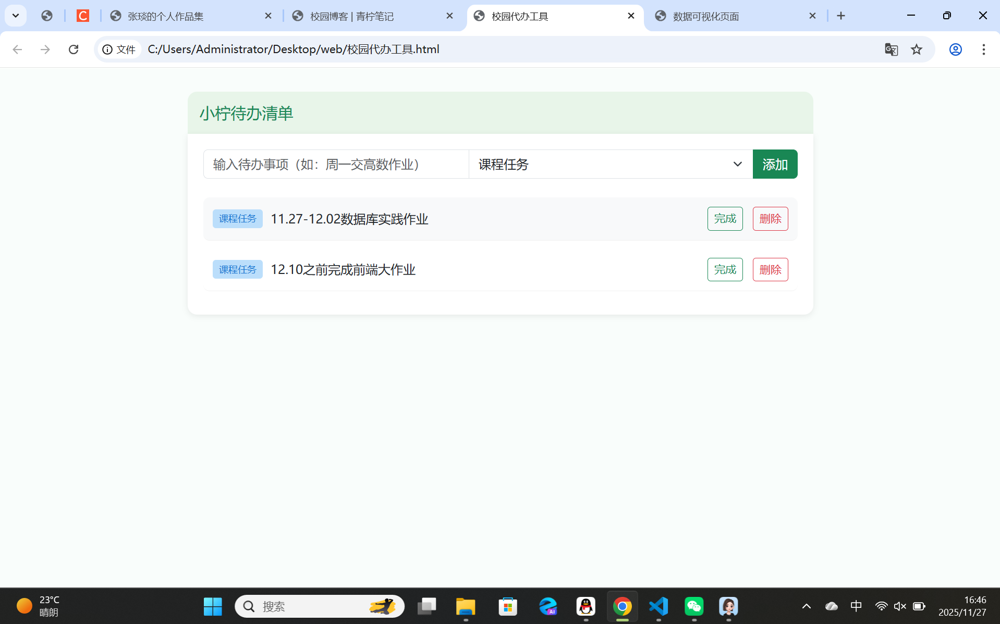
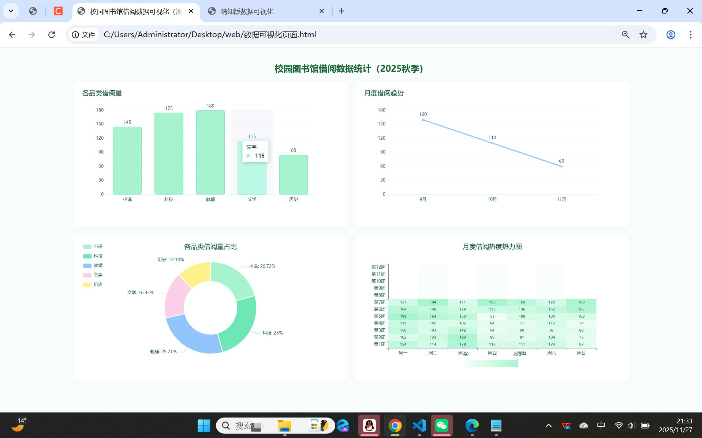
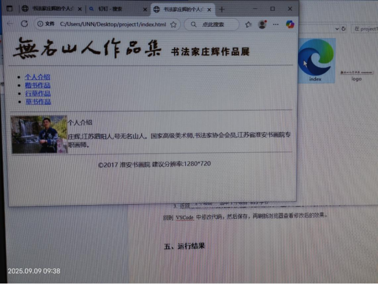
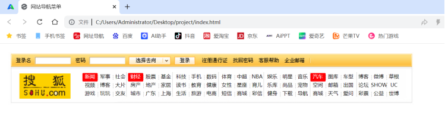
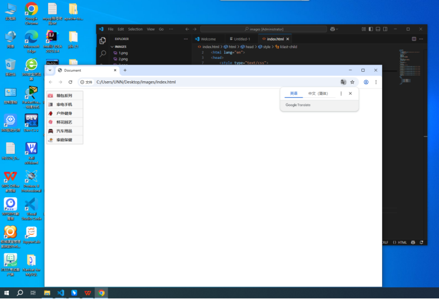
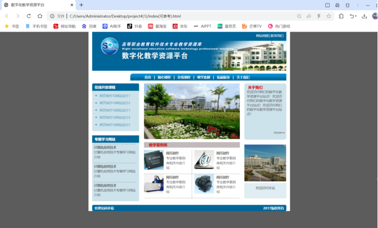
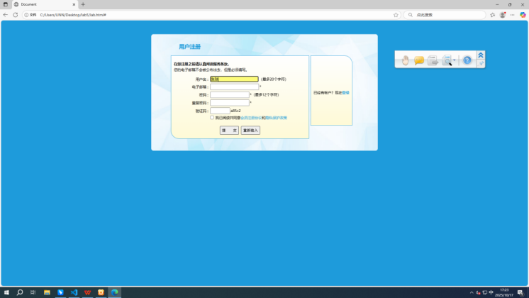

张琰
首页
关于我
技能
项目作品
联系我
我的项目作品
返回首页

校园博客网站（青柠笔记）
HTML/CSS
Bootstrap
响应式布局
交互设计
项目内容:搭建含博客列表、评论功能、分类侧边栏的响应式博客网站;
核心技术:用Bootstrap实现自适应布局,通过CSS优化清新视觉风格;
交互设计:添加评论区显示/隐藏、卡片hover动效等细节;
项目特点:适配多终端,风格简洁清新,功能覆盖博客基础场景
在线预览

校园待办工具（小柠清单）
HTML/CSS
JavaScript
本地交互
分类管理
项目内容:实现待办添加、分类标签、完成/删除等核心功能;
核心技术:用JavaScript实现本地交互逻辑,通过CSS区分课程/活动标签;
交互设计:待办hover高亮、完成状态文字划线等细节;
项目特点:适配校园场景,操作简洁,视觉风格清新舒适
在线预览

校园借阅数据可视化页面
ECharts
多图表组合
自适应图表
数据展示
项目内容:实现品类借阅量柱状图、月度趋势折线图的组合展示;
核心技术:用ECharts配置图表样式,通过JavaScript实现窗口自适应;
视觉设计:采用清新浅紫配色,图表布局简洁清晰;
项目特点:支持数据可视化展示,适配窗口尺寸变化
在线预览

实验一：书法家庄辉个人介绍页搭建
HTML标签
线性布局
行内样式
页面模块
实验目标:用HTML标签搭建含Logo、导航、个人信息、版权的介绍页;
工具与技术:以VSCode为编辑器,通过header、ul等HTML标签构建页面;
实现内容: 用行内样式调整布局, 完成所有页面模块的搭建;
实验收获:掌握HTML标签与线性布局,提升编码能力,后续可学CSS优化页面
在线预览

实验二：搜狐导航栏页面设计（CSS布局伪类选择器）
CSS布局
伪类选择器
层级处理
UI细节
实验内容:模仿搜狐导航栏,调整HTML结构、CSS样式,处理层级避免重叠
核心技能:用nth-child选择器批量加高亮,通过position、flex解决布局错乱
实验难点: 理解代码对应效果, 调整布局的精准度
收获总结:巩固CSS布局与选择器知识,明白UI设计需注意间距、配色等细节
在线预览

实验三：商品类别导航栏搭建(HTML/CSS背景图标)
HTML/CSS
背景图标
排错思路
媒体查询
实验内容:用nav+ul+li搭框架,a设商品链接,CSS配背景图标+hover交互
遇到问题: 图片不显示, 通过绝对路径解决
核心收获:掌握HTML结构/CSS样式应用,形成路径、样式优先级的排错思路
不足与优化: 未适配移动设备, 后续可通过媒体查询优化
在线预览

实验四：数字化教学资源平台开发(HTML/CSS页面布局)
HTML/CSS
页面布局
配色方案
设计转化
实验内容: 围绕“数字化教学资源平台”开发, 完成页面布局与样式实现
核心操作:用CSS设主背景(#5c5c5c)、内容背景(白色)等配色;通过定位/边距排“首页”“核心课程”模块
最终效果: 呈现结构清晰、视觉协调的网页
实验收获:巩固CSS布局/样式知识,掌握设计方案到页面的转化方法
在线预览

实验五：用户注册页面开发(HTML表单CSS样式)
HTML表单
表单验证
交互样式
样式加载
实验内容:围绕用户注册页面,完成HTML表单结构与CSS样式开发
核心操作:用form、input搭表单,required做验证;CSS设背景、交互效果(超链接悬浮、输入框聚焦)
遇到问题: 修正link标签错误, 确保样式文件加载
实验收获:掌握HTML表单+CSS样式的结合,熟悉前端页面从结构到美化的流程
在线预览